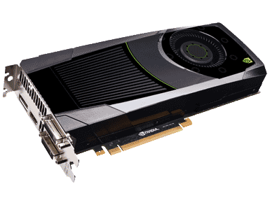

Your computer may not even need a graphics card to function.
Some computers today have a CPU that has an integrated GPU built on to it.
If that is the case with your CPU then a video card is option and would depend on what you are planning to use your computer for.
If this will be a server you wont need a video card if you have integrated graphics.
If this will be a Media PC or a desktop computer and you don't intend to play HD content or high resolution games on it then you wont need a graphics card.
If you are building a gaming PC, A 3d or 4k capable media pc or if your CPU does not have an integrated GPU then you will need some form of video card.
Deciding on a video card can be tough because some types of cards don't play well with certain operating systems.
It is a general consensus that ATI graphics cards do not work well with linux based operating systems.
Your ATI card may work perfectly and then they do a Linux patch and then it isn't working so go so you may spend a lot of time figuring out why something broke.
My recommendation would be to use an Nvidia graphics card save yourself some possible headaches if you are planning to use a Linux based OS.